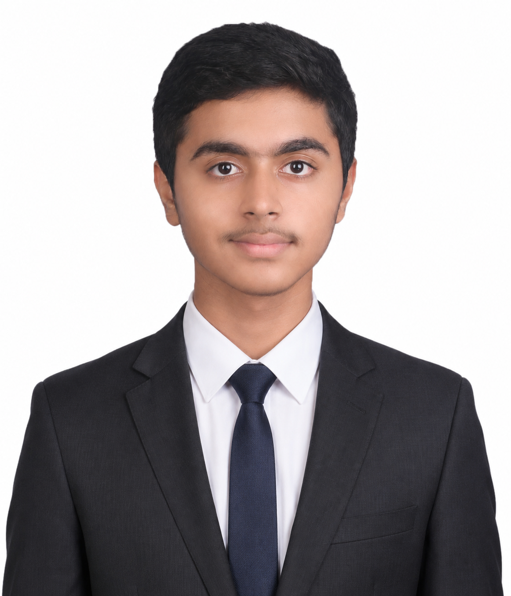

I am Mohammad Umaid Farooq, a student currently living in Pune, born in Allahabad and mostly raised in Lucknow. My passion is tennis, and I aspire to achieve greatness through discipline and dedication.
State-Level Recognitions in Tennis
🎾 Tennis
🏎 Max Verstappen
🎮 RDR2 & Valorant
🏏 MS Dhoni
Own a BMW M5 CS